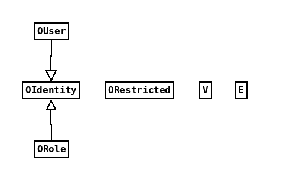
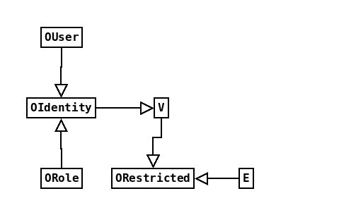

Author: Bruce Ashton
Date: 2015-09-21
OrientDB is a relatively new graph database with features of document-oriented and object databases as well. Despite a handful of big name customers and one or two other interesting claims to fame, most people I've talked to haven't heard of it yet.
Three of its features are of particular interest though:
Put together, these three features allow a model for web applications where the database mitigates a common web security issue for free and helps to manage a couple of others.
This document and the associated code illustrate how this can work.
OrientDB as it currently exists does not quite support the proposed architecture at scale. There are one or two problems to solve which are discussed at the end of this document.
OrientDB uses the traditional user/role-with-permissions security model. As noted above though, users and roles are both classes like any other record and can be manipulated in the same way.
As a quick summary; A user record corresponds to login. Users and roles have a many-to-many relationship. Permissions are specified as some combination of create, read, update and delete. Roles have permissions over database resources. Resources are defined at many levels, from database down to record. For a full explanation of the OrientDB security model, go to the manual.
Record level security is implemented slightly differently to other levels. It can be applied to records only if they are members of classes that extend ORestricted. To apply this to the nodes and edges of a graph database that means you must alter the V (vertex) and E (edge) classes to extend ORestricted.
Instances of ORestricted (and its sub-classes) inherit four properties, _allow, allowRead, _allowUpdate and _allowDelete. These properties contain collections of OrientDB roles and/or users that can apply the given operation to that record. Orient adds a hook to the record that is checked before every CRUD operation.
The default is to allow the only user creating the record access to any operations on it. This behaviour can be customised with the onCreate hook.
Roles can be given the ability to bypass record level security constraints using the special, "database.bypassRestricted" permission. This permission cannot be inherited.
There are six classes that are of interest to us when defining the user model in an OrientDB graph database. The classes and their relationships in a freshly created graph database are shown below. As you can see OUser and ORole both extend OIdentity, but none of the other classes have any particular relationship.
OUser and ORole must extend OIdentity, in order to be part of the OrientDB security model. But wouldn't it be useful if our users could part of a graph? The easiest way to achieve this is to let OIdentity extend V. Now Our users can also be nodes in a graph.
Just as a note, OrientDB versions 2.1 and later allow multiple inheritance, which would allow OUser or ORole to extend both OIdentity and V. This would allow more flexibility in how one structures this.
We also would like to apply record level security to all the elements of our graph, including the users. We can do this by letting V, and possibly also E, extend ORestricted, as recommended in the manual. Now our class diagram looks like this:
At this point database users are first class citizens of our graph and can be queried like any other graph component. The records they create (including new roles and users) can be governed by record level security.
Now let's say we create a web application that allows users to sign up and log in. We still need to write the user interface for these functions, but we no longer have to develop a user model, permissions model, etc. We get these for free.
Any new records created by a user are only available to that user by default, so long as we ensure those records extend ORestricted. If we want to make the records more generally available we must do so explicitly either by policy or specific action. New restricted records are created secure by default.
This directly mitigates the risk of one of the most common web application vulnerabilities - insecure direct object references. Every reference to a vertex or edge in our graph gets access checked for free.
It indirectly mitigates some of the risk of broken authentication and session management, in as much as it allows this functionality to be delegated to the database. Authentication is handled directly by the database. Session management remains the responsibility of the web application, but this can be delegated to the container. Using OdbRealm and OdbResource, authentication and session management become a task of configuration rather than coding.
There is a significant non-security related benefit here as well. Developers still get tasked with writing boilerplate authentication and authorisation management code for far too many web applications. Having this provided is a real timesaver.
It potentially mitigates some of the risk of missing function level access control. It does this by protecting access to the underlying data. For example, a blog user might have write access to their own posts but only read access to another user's posts. A malicious user might find a way to invoke edit functionality on another user's blog, but the edit would still fail because of access checks.
There is a flip-side to making all your users database users. An OrientDB database engine usually listens on a couple of ports and a malicious user could potentially log in on any of them and execute arbitrary queries, if they were to gain network access and the credentials of any user. The queries would still be governed by the same security model though, and sensible firewall, network and database configuration should provide sufficient protection from this.
The biggest issue is the potential for scalability issues due to the OrientDB connection and authentication model.
OrientDB encapsulates a connection to a graph database with an instance of the class OrientGraph. The credentials must be passed in at instance construction. This means at least one OrientGraph instance must be created for each logged in user. This will eventually hit limits with large numbers of users.
If this were a traditional DB user model, with a small number of database users servicing all web users, connection pooling would be a relatively simple task. But here every logged in web user requires at least one distinct OrientGraph instance, at least for the duration of a given request. Creating a new OrientGraph instance is a relatively expensive operation.
Embedding the database in the web application goes some way to solving this problem by removing the need for any kind of socket resource. However we still want to avoid creating a new OrientGraph instance for every request.
I have not done any benchmarking on OrientDB to see just how many concurrent OrientGraph instances can be used, nor am I aware of any benchmarking by anyone else, including Orient Technologies.
The OdbResource library provides a pool for OrientGraph instances, but it is a kludge. OrientGraph instances are created for a particular user and can only be used by that user. They are recycled across requests, but once the number of logged in users exceeds the maximum number of connections in the pool, existing OrientGraph instances must be constantly destroyed so that new instances can be created for other users. What it mostly does is allow us to tune the total number of OrientGraph instances per application (and per user.) This at least allows a web application to fail more gracefully.
What is required is the ability to cheaply re-authenticate existing OrientGraph instances with new sets of credentials. This would allow the creation of a proper connection pool. But this solution requires a patch to OrientDB. It can't be achieved just by library interacting with OrientDB's public API.
So this document is in part a plea to Orient Technologies, the company behind OrientDB, to support these ideas. A better solution than OdbResource requires changes to the OrientDB codebase. I would like to write a patch, but there would be a considerable amount of work involved in producing and then maintaining it. It would help a lot to know Orient Technologies were interested in supporting this model of use of OrientDB.
OrientDB is an excellent database for rapid web application development that (very nearly) provides a security model that no other database that I am aware of does. A small amount of work is needed to turn it into something very special.
If you like the ideas presented here, let Orient Technologies know and encourage them to support the development necessary for this architecture!